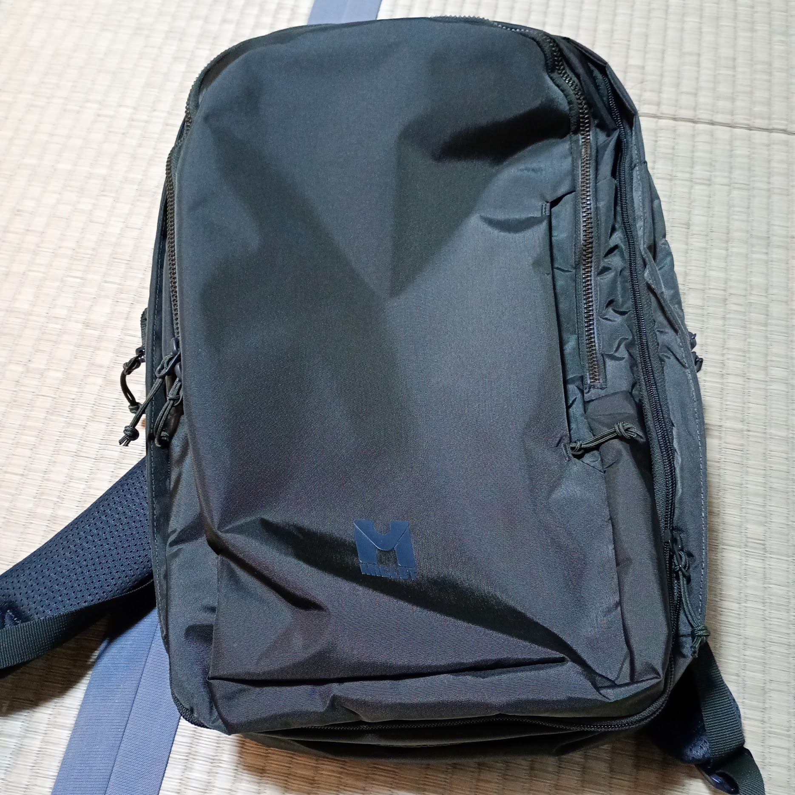
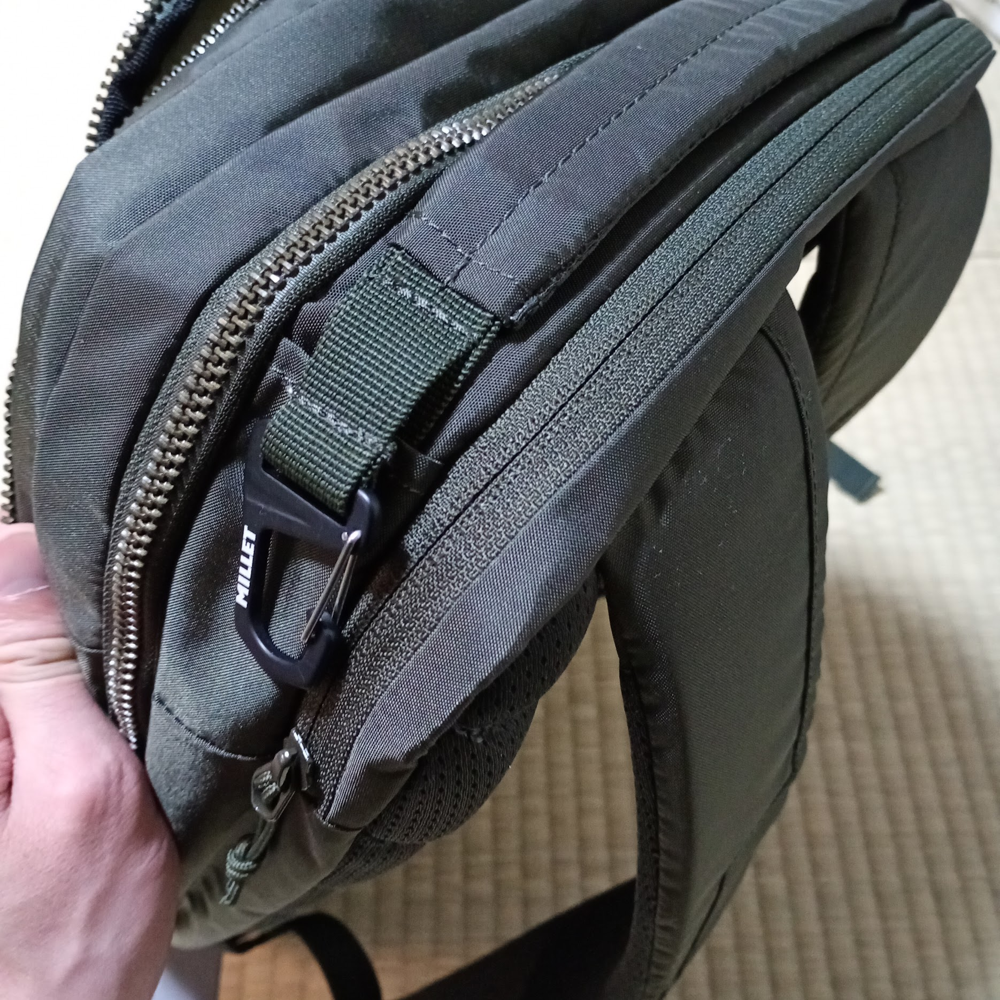
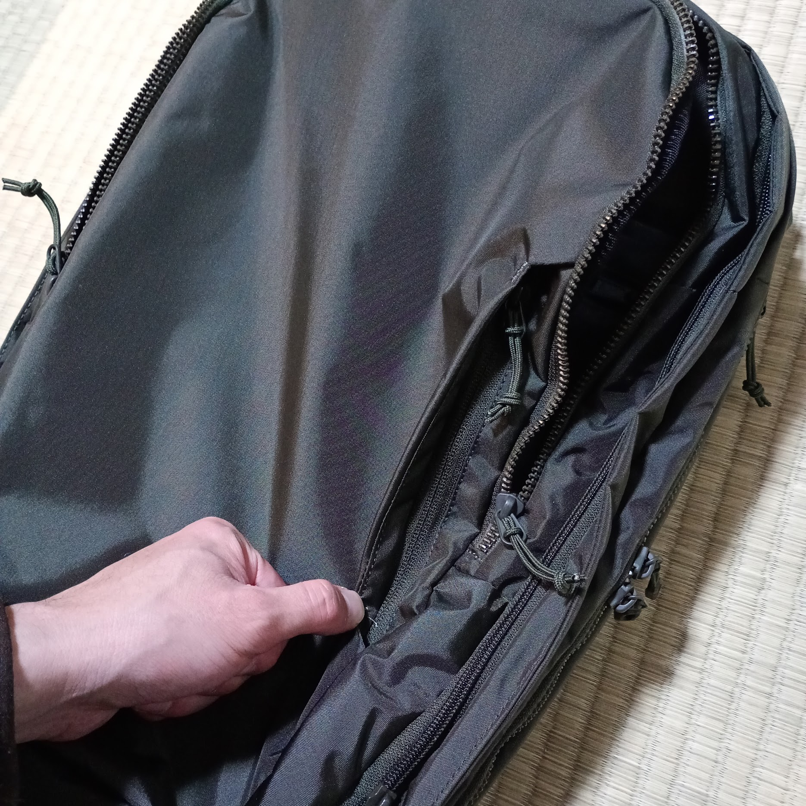
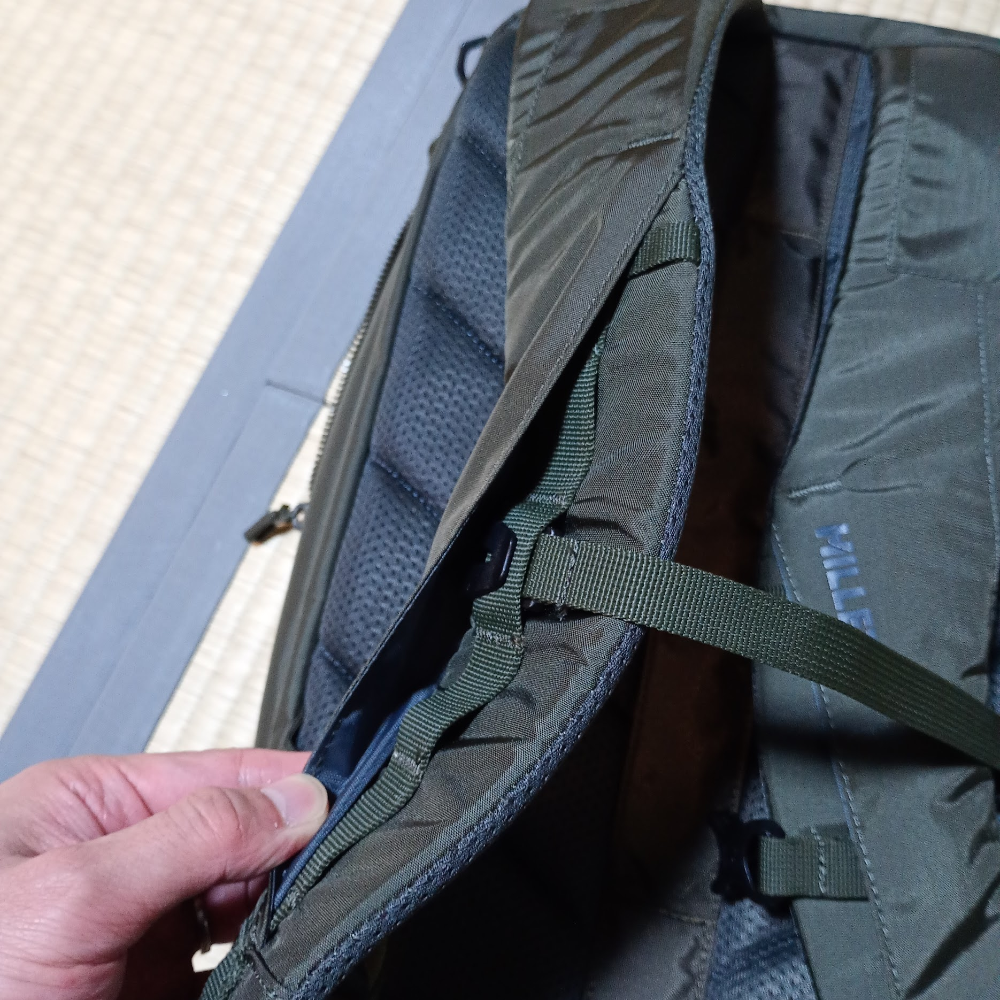

MilletのEXP 20+を買いました。カジュアルにもビジネスにも使えるシンプルさだけでなく、多機能さも兼ね備えた良品です。

日常的に使いつつ、家族とのおでかけや1、2泊の出張もいけちゃうリュックを探していました。可能ならPCスリーブと撥水性くらいは欲しいなとも。
条件にあてはまるところでcabbinzero CLASSIC TECH 28Lを第一候補にしていました。しかしツレにごつすぎと言われとりやめ。ポップなカラーや防水性能など見所の多いリュックだったので未だに後ろ髪を引かれます。
https://jp.cabinzero.com/products/classic-tech-backpack-28l-orange-chill
ともあれ家族ウケは大事。ファスナーで20Lから28Lに拡張可能なMillet EXP NX 20+にした次第です。色んな服になじみそうと思ってDeep Jungleカラーをチョイス。
主な機能については公式サイトを見ていただければ十分かなと思うので、個人的な推しポイントをいくつか紹介します。
生地がコーデュラナイロンなおかげである程度の撥水性を期待できます。とはいえ突然の雨ではファスナーからの浸水は怖い。 PCを入れてたり、アウターポケットに貴重品を入れてると余計ですよね。
ということでその2箇所には止水ファスナーが使われています。


実は旧モデルにEXP 20+があるのですが、こちらは止水ファスナーではなかった模様。モデルチェンジの比較は以下の記事が参考になるのですが、ファスナーについての記述はなかったので、ここで紹介。
新旧モデル「EXP NX 20+」と「EXP 20+」で何が違う？ミレー人気のビジネスリュック
https://nebukuro.net/millet-exp-nx20-vs-exp20/
ショルダーベルトの表面をぺらっとめくるとデイジーチェーンがかくれてます。
デイジーチェーンってスマホホルダーなんかをつけたい時に重宝しますが、しばしば無骨さや野暮ったさを出してしまう原因にもなります。使わない限り隠せる仕組みなのはとてもいいですね。
上の方には水平方向のデイジーチェーンというかループというかもあるので、用途に応じて使い分けも可能。
ちなみにチェストストラップもここについてるだけで脱着可能。

というわけでMillet EXP NX 20+の紹介でした。
前に使ってたリュックは10年ほど使った結果、ショルダーベルトが千切れてしまいました。よくもったと思います。
今度のリュックも長く使いたいな。